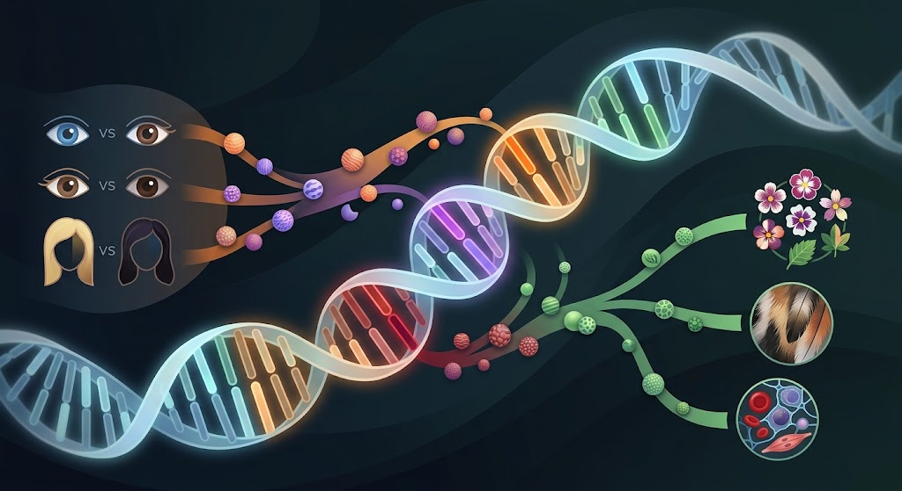

ยีนและการควบคุมลักษณะทางพันธุกรรม
ยีน (Gene) คือ ส่วนหนึ่งของ DNA ที่มีข้อมูลทางพันธุกรรมสำหรับสร้างโปรตีนหรือ RNA ยีนเป็นหน่วยพื้นฐานที่ควบคุมลักษณะต่าง ๆ ของสิ่งมีชีวิต เช่น สีผิว สีตา ลักษณะเส้นผม กรุ๊ปเลือด และความสูง
ยีนแต่ละยีนจะอยู่บนตำแหน่งเฉพาะของโครโมโซม เรียกว่า โลคัส (Locus) สิ่งมีชีวิตหนึ่งชนิดอาจมียีนจำนวนมาก และยีนแต่ละชนิดทำงานร่วมกับยีนอื่น รวมทั้งได้รับอิทธิพลจากสิ่งแวดล้อม จึงทำให้เกิดความหลากหลายของลักษณะ
การควบคุมลักษณะทางพันธุกรรมเกี่ยวข้องกับการแสดงออกของยีน โดย DNA ถูกถอดรหัสเป็น RNA และ RNA ถูกใช้เป็นแบบในการสร้างโปรตีน กระบวนการนี้เรียกว่า การแสดงออกของยีน (Gene Expression) โปรตีนที่สร้างขึ้นจะทำหน้าที่ต่าง ๆ และส่งผลให้เกิดลักษณะที่สังเกตได้หรือฟีโนไทป์